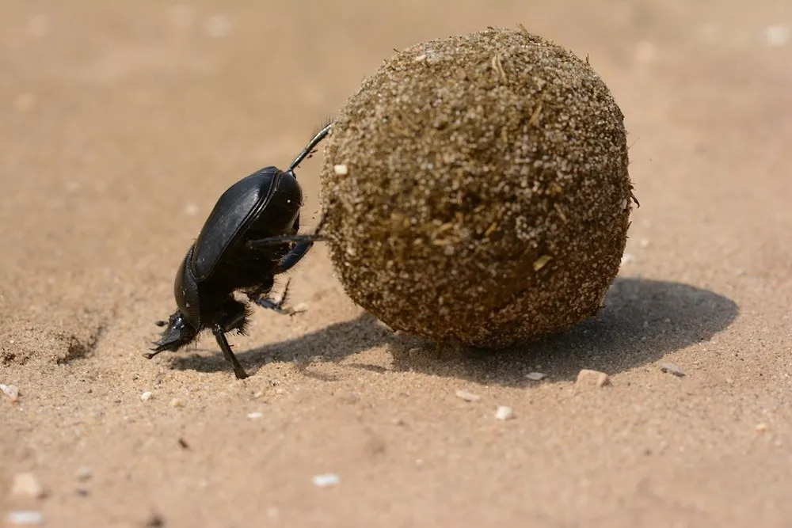
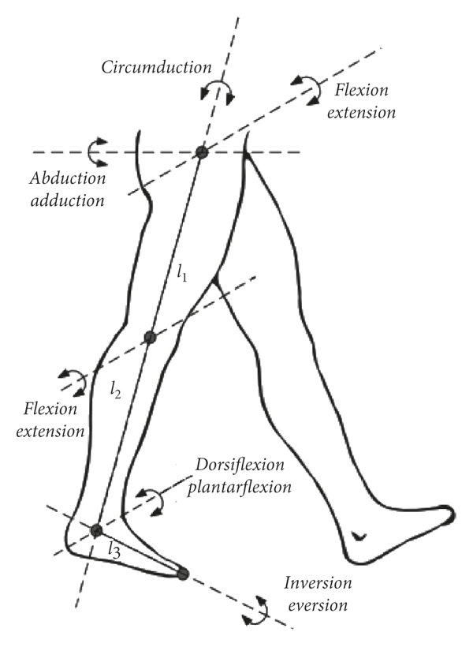
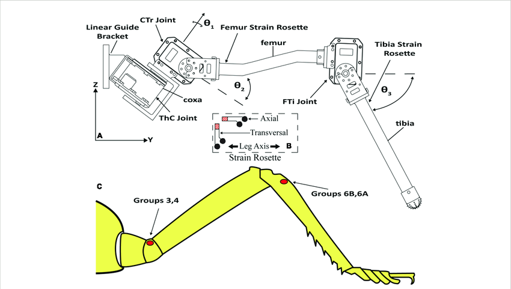

Legged locomotion is characterised by a
The main disadvantages of legged
locomotion include
Leg Configurations and Stability
Because legged robots are biologically inspired, it is instructive to examine biologically successful legged
systems. A number of different leg configurations have been successful in a variety or organisms seen in
Fig. 1.6.
Large animals such as mammals and reptiles have four (
Bipedal motion is much more complex active control to maintain balance.
In contrast, a creature with three (

There is also the potential for great variety in the complexity of each individual leg. Once again, the biological world provides ample examples at both extremes. For instance, in the case of the caterpillar, each leg is extended using hydraulic pressure by constricting the body cavity and forcing an increase in pressure, and each leg is retracted longitudinally by relaxing the hydraulic pressure, then activating a single tensile muscle that pulls the leg in towards the body, seen in Fig. 1.7. Each leg has only a single DoFDegrees of FreedomDegrees of Freedom, which is oriented longitudinally along the leg. Forward locomotion depends on the hydraulic pressure in the body, which extends the distance between pairs of legs. The caterpillar leg is therefore mechanically very simple, using a minimal number of extrinsic muscles to achieve complex overall locomotion.
At the other extreme, the human leg has more than six (


In the case of legged mobile robots, a minimum of two (
The number of possible gaits depends on the number of legs [†]Alexander, R. M. Optimization and gaits in the locomotion of vertebrates. Physiological reviews 69, 1199–1227 (1989).
The gait is a sequence of lift and release events for the individual legs. For a mobile robot with legs, the total number of possible events for a walking machine is:
|
| (1.1) |
For a bipedal walker (=2) legs the number of possible events is:
|
| (1.2) |
The six (
-
lift right leg
-
lift left leg
-
release right leg
-
release left leg
-
lift both legs together
-
release both legs together
As can we see, this list of possible events quickly grows quite large. For example, a robot with six
(
| (1.3) |
Although there are no high-volume industrial applications to date, legged locomotion is an important area of long-term research. Several interesting designs are presented below, beginning with the one-legged robot and finishing with six-legged robots.
Single Leg
The minimum number of legs a legged robot can have is, of course, one. Minimising the number of legs is beneficial for several reasons.
-
Body mass is particularly important to walking machines, and the single leg minimises cumulative leg mass.
-
Leg coordination is required when a robot has several legs, but with one leg no such coordination is needed.
-
The one-legged robot maximises the basic advantage of legged locomotion: legs have single points of contact with the ground in lieu of an entire track as with wheels.
A single legged robot requires only a sequence of single contacts, making it useful in rough terrain.
Perhaps most importantly, a hopping robot can dynamically cross a gap that is larger than its stride by taking a running start, whereas a multi-legged walking robot that cannot run is limited to crossing gaps that are as large as its reach.
The major challenge of creating a single-leg robot is
This robot makes continuous corrections to body attitude and to robot velocity by adjusting the leg angle with respect to the body. The actuation is hydraulic, including high-power longitudinal extension of the leg during stance to hop back into the air. Although powerful, these actuators require a large, off-board hydraulic pump to be connected to the robot at all times. Fig. 1.11 shows a more energy efficient design developed [†]Brown, B. & Zeglin, G. The bow leg hopping robot in Proceedings. 1998 IEEE International Conference on Robotics and Automation (Cat. No. 98CH36146) 1 (1998), 781–786. Instead of supplying power by means of an off-board hydraulic pump, the Bow Leg Hopper is designed to capture the kinetic energy of the robot as it lands using an efficient bow spring leg. This spring returns approximately 85% of the energy, meaning that stable hopping requires only the addition of 15% of the required energy on each hop. This robot, which is constrained along one axis by a boom, has demonstrated continuous hopping for 20 minutes using a single set of batteries carried on board the robot. As with the Raibert Hopper, the Bow Leg Hopper controls velocity by changing the angle of the leg to the body at the hip joint. The paper of Ringrose [†]Ringrose, R. Self-stabilizing running in Proceedings of International Conference on Robotics and Automation 1 (1997), 487–493 demonstrates the very important duality of mechanics and controls as applied to a single leg hopping machine. Often clever mechanical design can perform the same operations as complex active control circuitry. In this robot, the physical shape of the foot is exactly the right curve so that when the robot lands without being perfectly vertical, the proper corrective force is provided from the impact, making the robot vertical by the next landing. This robot is dynamically stable, and is furthermore passive.
The correction is provided by physical interactions between the robot and its environment, with no computer nor any active control in the loop.
Two Legs (Bipedal)
A variety of successful bipedal robots have been demonstrated. Two-legged robots have been shown to run, jump, travel up and down stairs and even do aerial tricks such as somersaults. Fig. 1.12 shows the Honda P2 bipedal robot, which is the product of tens of millions of research dollars and more than a decade of work. This biped can walk on slopes, climb and descend stairs, and push shopping carts. The crucial technology that enables this robot is Honda’s research into the fabrication of extremely high torque, low mass motors that serve as the robot’s joints. In the case of P2, the most significant obstacle that remains is energy capacity, efficiency and autonomous navigation. This robot can operate for only about 20 minutes with on-board power. An important feature of bipedal robots is their anthropomorphic shape. They can be built to have the same approximate dimensions as humans, and this makes them excellent vehicles for research in human-robot interaction.

Bipedal robots can only be statically stable within some limits, and so robots such as P2 and Wabian generally must perform continuous balance-correcting servoing even when standing still. Furthermore, each leg must have sufficient capacity to support the full weight of the robot. In the case of four-legged robots, the balance problem is facilitated along with the load requirements of each leg. An elegant design of a biped robot is the Spring Flamingo of MIT seen in Fig. 1.13. This robot inserts springs in series with the leg actuators to achieve a more elastic gait. Combined with "kneecaps" that limit knee joint angles, the Flamingo achieves surprisingly biomimetic motion.
Four Legs (Quadruped)
Although standing still on four legs is passively stable, walking remains challenging because to remain stable the robot’s center of gravity must be actively shifted during the gait. Sony recently invested several million dollars to develop a four-legged robot (figure 2.14). To cre- ate this robot, Sony created both a new robot operating system that is near real-time and invented new geared servomotors that are sufficiently high torque to support the robot, yet backdriveable for safety. In addition to developing custom motors and software, Sony incorporated a color vision system that enables Aibo to chase a brightly colored ball. The robot is able to function for at most one hour before requiring recharging. Early sales of the robot have been very strong, with more than 60,000 units sold in the first year. Nevertheless, the number of motors and the technology investment behind this robot dog have resulted in a very high price of approximately 1500. Four legged robots have the potential to serve as effective artifacts for research in human- robot interaction (fig. 2.15). Humans can treat the Sony robot, for example, as a pet and might develop an emotional relationship similar to that between man and dog. Furthermore, Sony has designed Aibo’s walking style and general behavior to emulate learning and maturation, resulting in dynamic behavior over time that is more interesting for the owner who can track the changing behavior. As the challenges of high energy storage and motor technology are solved, it is likely that quadruped robots much more capable than Aibo will become common throughout the human environment.
Six Legs (Hexapod)
Six legged configurations have been extremely popular in mobile robotics because of their static stability during walking, thus reducing the control complexity (figure 2.16 and 2.17). In most cases, each leg has 3 DOF, including hip flexion, knee flexion and hip abduction (figure 2.6).

Genghis is a commercially available hobby robot that has six legs, each of which has 2 DOF provided by hobby servos (figure 2.18). Such a robot, which consists only of hip flexion and hip abduction, has less maneuverability in rough terrain but performs quite well on flat ground. Because it consists of a straightforward arrangement of servo motors and straight legs, such robots can be readily built by a robot hobbyist. Insects, which are arguably the most successful locomoting creatures on earth, excel at traversing all forms of terrain with six legs, even upside down. Currently, the gap between the capabilities of six-legged insects and artificial six-legged robots is still quite large. Interestingly, this is not due to a lack of sufficient numbers of degrees of freedom on the robots. Rather, insects combine a small number of active degrees of freedom with passive structures, such as microscopic barbs and textured pads, that increase the gripping strength of each leg significantly. Robotic research into such passive tip structures has only recently begun. For example, a research group is attempting to recreate the complete mechanical function of the cockroach leg (Roland, reference in notes (Espenschied et al.)). It is clear from all of the above examples that legged robots have much progress to make before they are competitive with thei24 Autonomous Mobile Robots have been realised recently, primarily due to advances in motor design. Creating actuation systems that approach the efficiency of animal muscle remains far from the reach of robotics, as does energy storage with the energy densities found in organic life forms